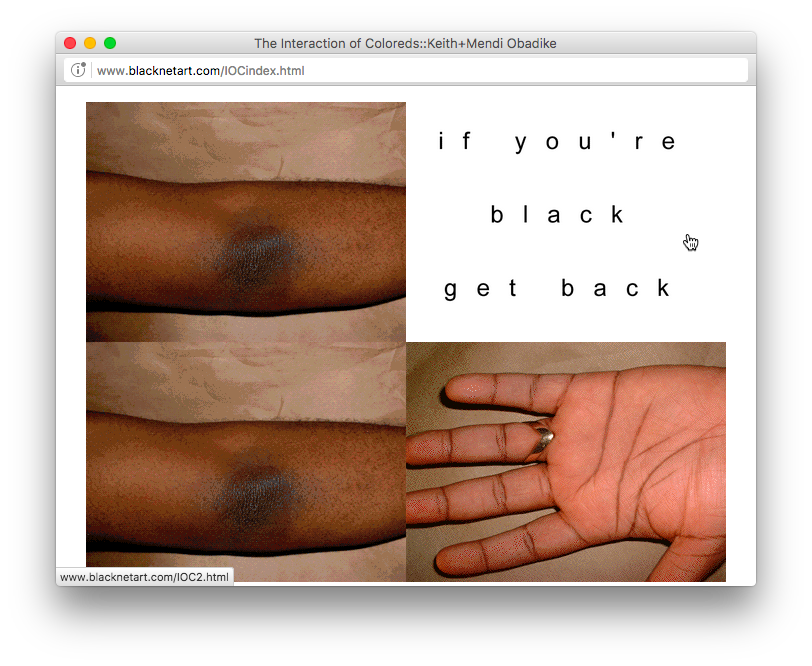

The Interaction of Coloreds is a browser-based work that administers a “digital brown paper bag test” to visitors, toying with historical systems of racial categorization and contemporary discourse around digital surveillance.
View the artwork here.